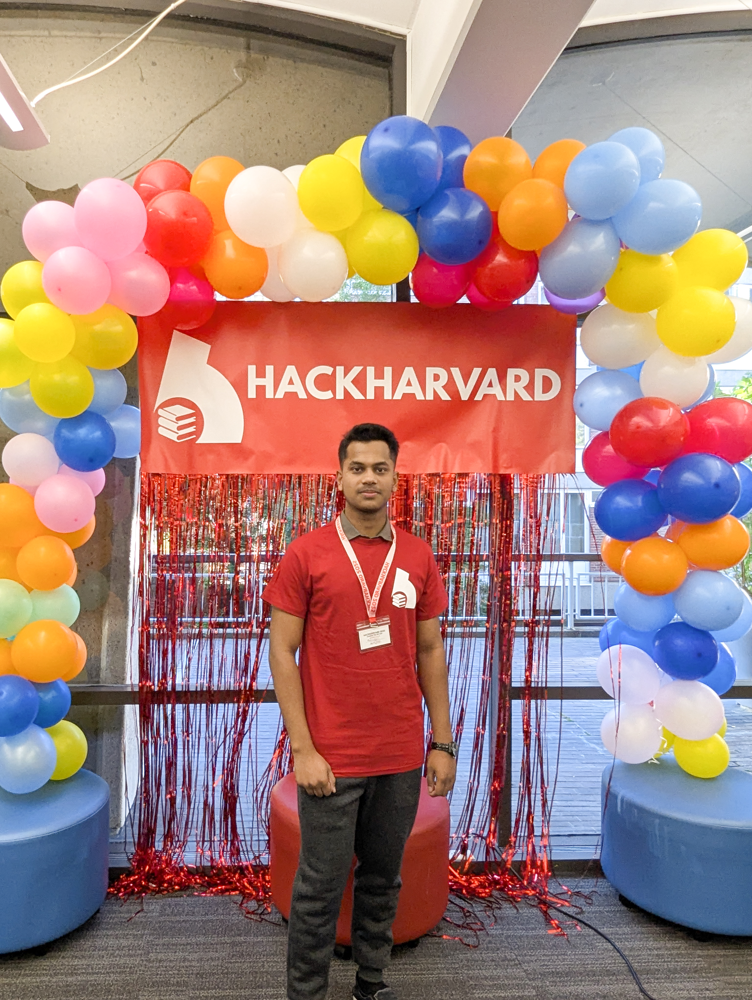
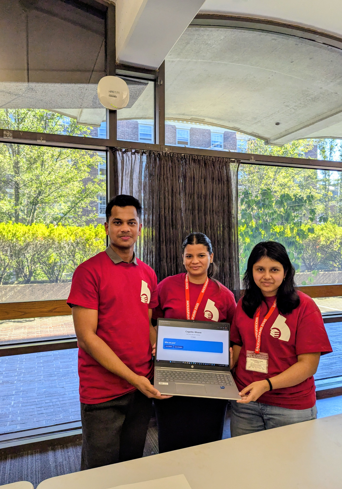
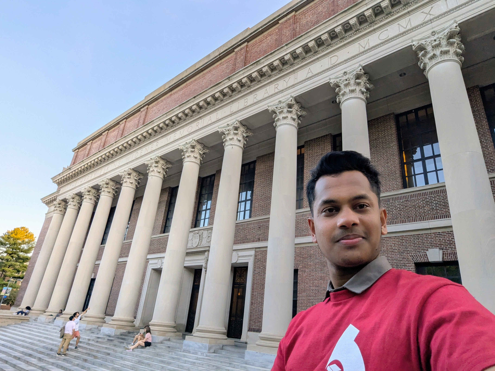
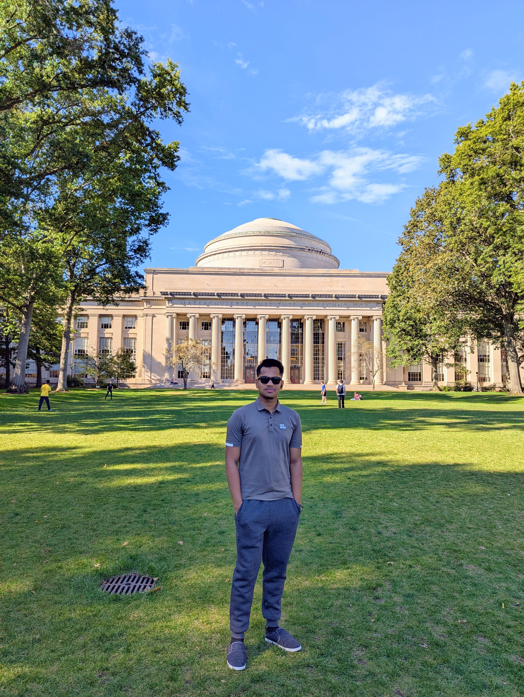

Always curious.
Always building.
I’m Ashraful Islam Tutul — a developer, researcher, teacher, and someone who likes to see where an idea can go.

From curiosity
to contribution.
My journey began with tinkering on basic websites in Bangladesh. Now I’m studying Computer Science with a Data Science minor at Truman State University, expecting to graduate in May 2028 with a current 3.77 GPA.
I’m drawn to projects where software meets the physical world: understanding orbital collision risks, analyzing soccer footage, and detecting microplastics under a microscope. Hackathons give me a place to explore those ideas with a team; research gives me a chance to go deeper.
As a Java teaching assistant, Google Developer Group project lead, and founding vice president of Bulldog Robotics, I’m also learning how to help other people build. Before college, I spent four years managing my father’s business in Bangladesh, handling operations, customers, and finances.
Outside of tech, you’ll find me cooking, traveling, photographing campus life, playing cricket or soccer, and sharing my experiences abroad on YouTube.
Ashraf Beyond the Atlantic ↗People. Places. Possibilities.






Have a challenge in mind?
I’d love to talk about software, applied AI, and the problems you’re solving.